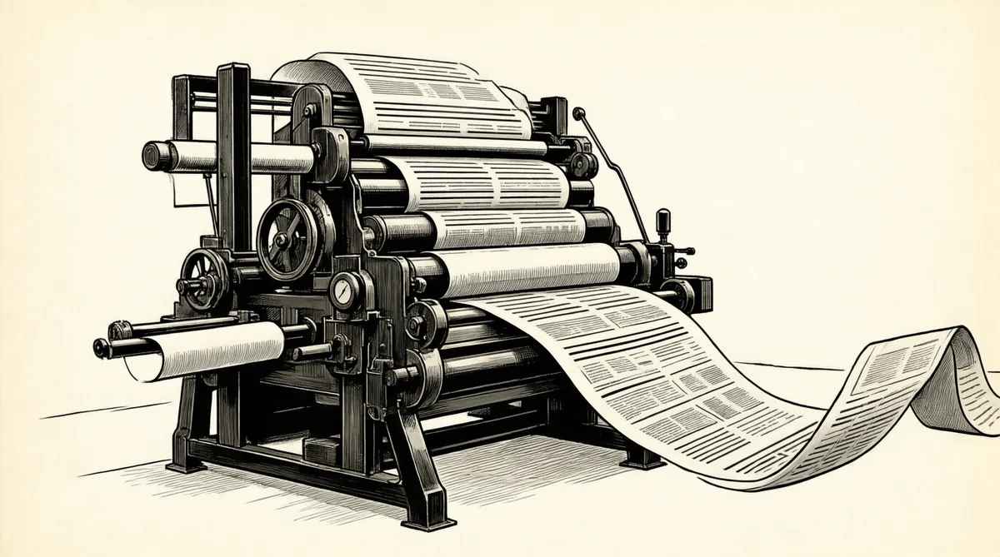

第23章 奥马哈俱乐部

和银行钢制拱门一样，奥马哈俱乐部的拱形大门在银行家、保险商以及这个城市的铁路巨头们的身后徐徐关上，黑人看门人乔治正在门后恭候。男人们在地下室打完壁球或者从城里的办公室赶来，在前厅的花砖壁炉旁闲逛聊天，等待着女士们从这座意大利文艺复兴风格的建筑正面的一个单独侧门进来加入他们。沿着弯曲的红木楼梯可以直到二楼，半路上有一幅真人尺寸大小的苏格兰人在小溪里抓鳟鱼的油画。奥马哈俱乐部是这里的城里人跳舞、募捐、结婚、庆祝纪念日的场所。更重要的是，这是他们谈生意的地方，因为在这儿的桌子边，你可以安静地交谈。
1959年夏天的一个星期五，巴菲特大步穿过俱乐部的入口，准备和两个合伙人共进午餐，尼尔·戴维斯以及他的妻兄李·西门，后者曾为沃伦安排和戴维斯自小最好的朋友见面。就是尼尔的父亲埃德温·戴维斯医生，在戴维斯家加入合伙公司时，对沃伦说过，“你让我想起了查理·芒格”。现在芒格正在城里处置他父亲的房地产。1
芒格对这个留着平头、比他小6岁的巴菲特知之甚少。不过和他对生活的总体期望一致的是，他对这次会面的期望值并不是很高。2他已经养成了不对任何事物期望太高的习惯，这样永远都不会失望。而且，查理·芒格很少遇到过能让他喜欢倾听对方说话的人。
芒格家开始也很贫困，不过到了19世纪后期，查理的祖父，身为联邦法官的T·C·芒格提高了家族地位。在奥马哈，他们都是在客厅受到款待——而不像巴菲特家族的人，总是在后门送货。芒格法官是一名刚强的严守纪律的人，他曾经强迫所有家人阅读《鲁滨孙漂流记》，吸取书中描绘的在磨炼中征服自然的精神。在中西部，他因为给陪审团的指示比其他法官的长而出名。3他喜欢给他的亲戚们就节俭的美德以及赌博和酒吧的罪恶上课。查理的古板姨妈尤菲听了课之后，“直到80多岁还兼顾两个不同的事业——管理教堂和存钱，而且在责任的驱使下，理所当然地参加了她深爱着的丈夫的验尸”。4当芒格法官去世时，据传也是这个姨妈奇怪地声称，他一定是被神的恩典所带走的，因为最近他在算术上犯了一个错误。她说她知道，“自那以后他就不能再留在这儿了”。
芒格法官的儿子阿尔跟随父亲进入法律界，成为一个受人尊敬但并不富裕的律师，《奥马哈世界先驱报》和当地其他重要的机构都是他的客户。虽然和他的父亲不一样，但他是快乐的。人们经常看到他抽烟、打猎或者捕鱼。他的儿子后来这样说：“他得到了他想得到的东西，不多也不少……比他的父亲和儿子都要少一点儿大惊小怪，后者在预见永远不会发生的麻烦事上花费了相当可观的时间。”5
阿尔的妻子，漂亮机智的弗罗伦丝·图迪·拉塞尔来自另一个以责任和诚实正直为家风的家族，那是一个具有进取精神的新英格兰地区的知识分子家庭，以查理提到的“生活朴素、情操高尚”而出名。当她宣布她将要和阿尔·芒格结婚时，她年迈的祖母注意到他厚厚的眼镜以及5.55英尺的身高时大吃一惊，“谁想到她会有这种感觉？”据称，她的祖母大叫了起来。
阿尔和图迪·芒格有三个孩子：查理、卡罗尔以及玛丽。查理婴儿时期的一张照片显示，他在那时就已经带有典型的任性表情了。在邓迪小学时，他最显著的外表是一双巨大的小精灵似的耳朵，如果他选择露出来，总会引起哄笑。他被公认为很聪明。根据他的妹妹卡罗尔的说法，“活泼”并且“思想独立到不屈服于某些老师的期望”。6“聪明，是个聪明人”，这是芒格家的邻居多萝西·戴维斯回忆查理童年时代给出的评价。7戴维斯夫人试图控制住查理对她儿子尼尔的影响，可是没有什么能让查理的嘴巴驯服，即使看见她手上拿着细枝条追着那帮男孩子，鞭打他们裸露的小腿肚。
在学会隐藏自己的痛苦以及采用巧妙的应对策略之前，童年时代的沃伦一直承受着侮辱，而只能稍作反抗。而太骄傲以致不愿屈服的查理面对伤人的挖苦讽刺，只好运用他的才华来承受年轻时的痛苦。可是在每周五艾迪·福格的舞蹈课上，作为班里唯一一个比他矮的女孩的舞伴，查理对这个强调他是班级第二矮的小孩的例行课程毫不掩饰自己的愤怒。8在中心高中的时候，他得到了“大脑”的绰号和极度活跃以及疏远同学的名声。9
成长在一个珍视学习的家庭，芒格长大后很有抱负，17岁被密歇根大学录取，主修数学。日军偷袭珍珠港后的一年，还在读大学二年级的芒格被征募入伍。服役期间，他修读了新墨西哥大学和加州理工学院的气象课程，但是从没有真正毕业。后来，他作为气象学者在阿拉斯加的诺母港工作。后来芒格说，他从没有见过现役军人能够驻扎在没有危险的地区，而这也强调了他的幸运。他的主要风险是财务上的：他通过打扑克牌增加了津贴。他发现他很擅长这个，这变成了他的赛马场。他说，他学会了胜算不大时下注很少，而胜算很大时狠狠下注，在以后的人生中，他也充分利用了这种优势。
“二战”结束后，通过良好的家族关系，他在没有完成大学本科学业的情况下，直接进入了哈佛大学法学院。10那时他已经和南希·哈金斯结婚，这是一次冲动的婚姻，当时他21岁，而她才19岁。芒格已经变成了一个中等身高、穿着考究的年轻人，黑色的短发和机警的目光让他的面貌焕然一新。不过他最重要的特征——除了他的耳朵，现在只是稍稍有点儿招风——是他招牌的表示怀疑的方式。即使是在哈佛，他也经常这样——没有学到什么，他说。11后来他告诉他的朋友们，那时，他站在地图前问自己，“哪个城市正在成长并且充满了机会，能让我挣到很多钱？而且这个城市不能太大，也不能发展得太好，否则要想进入这个城市的显要人物行列就会比较困难。”他选择了洛杉矶。12帕萨迪纳市让他印象深刻——在这个雍容的旧时西班牙风格的洛杉矶郊区，他曾经上过加州理工学院。也是在那儿，他遇见了未来的妻子，当地一个显赫家庭的女儿。“南希任性、被宠坏了。”她的女儿莫利说，考虑到她新婚丈夫的性情，她的性格并不理想。13没过几年，他们的婚姻就出现了问题。尽管这样，从哈佛毕业后，他们带着儿子泰迪回到了她的家乡帕萨迪纳市定居，在那儿查理成了一个成功的律师。
1953年，有了3个孩子并经过8年的不相容、争斗和痛苦，芒格离婚了，在当时，离婚还是一件不光彩的事。尽管他们之间有问题，但考虑到他们的儿子和两个女儿，他和南希做出了文明的安排。芒格搬进了大学俱乐部的一个房间，买了一辆有凹痕的黄色庞蒂克车，车面上的油漆糟糕到“会让掘金者们气馁”，从此成为一个星期六陪孩子的父亲。14接着，在分开的这一年里，8岁的泰迪被诊断得了白血病。芒格和他的前妻问遍了整个医学界，很快发现这个病是无法治愈的。他们和其他的父母以及祖父母们，一起坐在白血病病房里，眼睁睁地看着孩子在不同的阶段日渐衰弱。15
泰迪经常在医院进进出出。查理过来看他，抱着他，然后在帕萨迪纳市的大街上一边走路，一边为他的儿子哭泣。他觉得失败的婚姻和儿子的绝症几乎让他无法承受。而且，在50年代，一个离婚的单身父亲的孤独也让他焦躁不安。他感受到了没有一个完整家庭的失败，希望孩子们能在身边。
当情况越来越糟时，芒格决定朝着新目标进发，而不是让自己沉迷在生活的不幸中。16也许这样显得实际甚至无情，不过他把这看成是让眼睛永远能看得见希望。“面对一些不可置信的不幸时，不要因为你自己的挫败感，让一个不幸增加成两个或三个。”他后来说。17
因此，即使芒格关心即将死去的儿子，他还是下定决心再婚。可是，他分析成功婚姻概率的方法让他悲观。
查理对于他能否再遇到某个人而感到绝望。“我怎样才能找到那个人呢？加利福尼亚2000万人口中有一半是妇女。在这1000万妇女中，只有200万人的年龄合适。200万人中，150万已经结婚，只剩下50万。50万人中的30万人太愚蠢，另外5万人又太聪明，剩下的15万人中，我想和她结婚的也就只能装满一个篮球场。我要从中找到一个，而且我还必须在她的那个篮球场里。”
查理设置低期望值的心理习惯已经根深蒂固。因为他觉得高期望值会导致吹毛求疵，所以在寻求幸福的路上也习惯性地没抱太大期望。低期望值会让人们失望的机会少一些。但是，自相矛盾的是，这也不一定会让他获得成功。
出于绝望，查理开始重新审视离婚和死亡通知书，并且开始寻找新的单身女性。这引起了他的朋友们的注意。考虑到他的悲惨经历，他们开始插手帮忙。他的一个律师合伙人带来了另外一个“南希”，一位有两个男孩的离婚妇女。南希·巴里·伯斯威克是个小小的、肤色浅黑、头发棕褐的女人，热衷于打网球、滑雪和高尔夫球。她也是斯坦福大学资优生荣誉学会的经济学毕业生。
第一次约会的时候，他就警告她：“我是那种说教式的人。”可是这并没有吓倒南希，这预示着他们的关系发展还不错。他们开始带着孩子们一起外出。开始，泰迪和他们一起行动，可他病情迅速加重。后来，在他儿子最后几周的时间里，31岁的查理总是坐在床边陪伴他。1955年泰迪去世，年仅9岁，在这期间查理瘦了10~15磅。“我无法想象人生中还有比一天天看着孩子离去更痛苦的事情。”后来他回忆说。18
1956年1月，查理·芒格和南希·伯斯威克结婚。他绝望地需要某个人为他安排生活。南希很有魄力，只要查理的气球里充斥了太多的热空气，她就会毫不犹豫地刺破它。她是一个优秀的管理者，观察敏锐、镇静、理性，而且务实。当查理偶尔冲动起来时，她会抑制住他的任性。在他的两个女儿和她的两个儿子的基础上，他们及时地添了三个儿子和一个女儿。除了做家务和照顾查理之外，她还要抚养8个孩子。19而对他的孩子们来说，他变成了“有腿的”书本，经常阅读科学和伟人成就方面的书。同时，他继续在缪吉克–皮乐–加勒特律师事务所追寻他的财富，不过他已经认识到，法律并不能让他致富。他开始搞一些挣钱的副业。“查理，作为一个非常年轻的律师，一小时应该可以得到20美元。他心中盘算着，‘谁是我的最有价值的委托人呢？’他认为是他自己。因此，他决定每天出售自己一个小时。他每天清晨为那些建筑项目和房地产交易忙碌。每个人都应该可以这样，先是委托人，然后再为其他人工作，每天出售自己一个小时。”
“我对致富有相当大的热情，”查理说，“不是因为我想要法拉利——我想要的是独立。我拼命地想得到它。我认为给其他人寄收据是一件有损尊严的不体面的事情，我不知道我从哪儿得来的这个想法，不过我确实这样想。”20他自视为一个绅士，对他而言钱不是竞争。他想加入合适的俱乐部，而并不关心其余成员是否比他富有。在他傲慢的外表之下，对真正的成就怀有深深敬意的心，让他能够真正地谦虚，这对他在和即将见面的这位男子之间建立联系非常关键。
在奥马哈俱乐部的包房里，坐在查理对面并开始讲话的这位男子穿得就像一个颇年轻的推销员，来向一位绅士推销保险。那时，会处世的查理已经在洛杉矶的商界和社交界颇有建树，而且看起来很入流。但是，当戴维斯夫妇和西门夫妇作完介绍，他们就完全开始了两人私下的交谈。查理承认他在巴菲特家族的杂货店“拼命工作”了一段时间，在那儿“你只能从早上的第一个钟头一直忙到晚上”。21但是，至少和其余那些忙得不可开交的雇员们相比，欧内斯特会让自己喜欢的如图迪·芒格这样的顾客的儿子享片刻清闲。22开了些玩笑以后，当沃伦开始谈投资和本杰明·格雷厄姆时，谈话加速，而其他人都在全神贯注地听。查理立刻能理解这些概念。“那时，他已经花了很多时间思考有关投资和生意上的事情。”巴菲特说。
他告诉查理有关美洲国家火灾保险公司的故事。查理和霍华德以及海登·哈曼森是一起上的中心高中。他对身处加利福尼亚之外的巴菲特能如此了解哈曼森家族以及他们的存款和贷款而感到吃惊。不久，这两个人的交谈就合上了拍，看起来好像非常了解对方。23过了一会儿，查理问：“沃伦，你具体做些什么？”
他已经有了这些合伙公司，巴菲特解释说，而且他做这，还做那。他说，1957年，市场下跌超过8%，而他的合伙公司一年挣了超过10%，次年合伙公司的投资升值超过了40%。24到目前为止，巴菲特从管理合伙公司中收取的费用通过再投资，已经达到了83085美元。这些管理费已经将他最初的700美元投资——7个合伙公司，每个投了100美元25——迅速增至占所有合伙公司股份的9.5%。而且，1959年，他的表现一如既往，将再次击败道琼斯指数，这将会让他变得更富有，而且提高其股份份额。最后，查理问：“你认为我能在加利福尼亚做同样的事情吗？”沃伦停了一会儿，看着他。这是一名成功的洛杉矶律师提出的一个不合常规的问题。“是的，”他说，“我非常确定你可以。”26午餐结束后，戴维斯夫妇和西门夫妇准备回去，当他们踏进电梯时，最后一眼看到的是，巴菲特和芒格还坐在桌子旁边全神贯注地交谈。27
过了几天，两人又带着各自的妻子来到约翰尼咖啡馆。席间，芒格自我陶醉于一个笑话，结果滑出了座位，在地板上笑着打滚儿。芒格夫妇返回洛杉矶后，巴菲特和芒格的讨论不断，两人打电话也越来越频繁，一次就是一两个小时。巴菲特曾经对乒乓球这样着迷过，现在终于找到更有趣的事情了。
“为什么你这么注意他？”南希问她的丈夫。
“你无法理解，”查理说，“他可不是一个普通人。”28